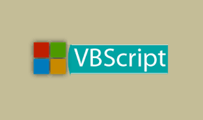

Lenguaje Visual Basic Script
Caracteristicas
VBScript2 abreviatura de Visual Basic Script Edition es un lenguaje interpretado por el Windows Scripting Host de Microsoft. Su sintaxis refleja su origen como variación del lenguaje de programación Visual Basic.
El modo de funcionamiento de Visual Basic Script para construir efectos especiales en páginas web es muy similar al utilizado en Javascript y los recursos a los que se puede acceder también son los mismos: el navegador.
